9lb Hammer is an indica dominant hybrid known for "hitting like a hammer". This strain start with an euphoric, uplifting high before transitioning to a relaxing, couch-locked sedation. Best saved for the end of your day!
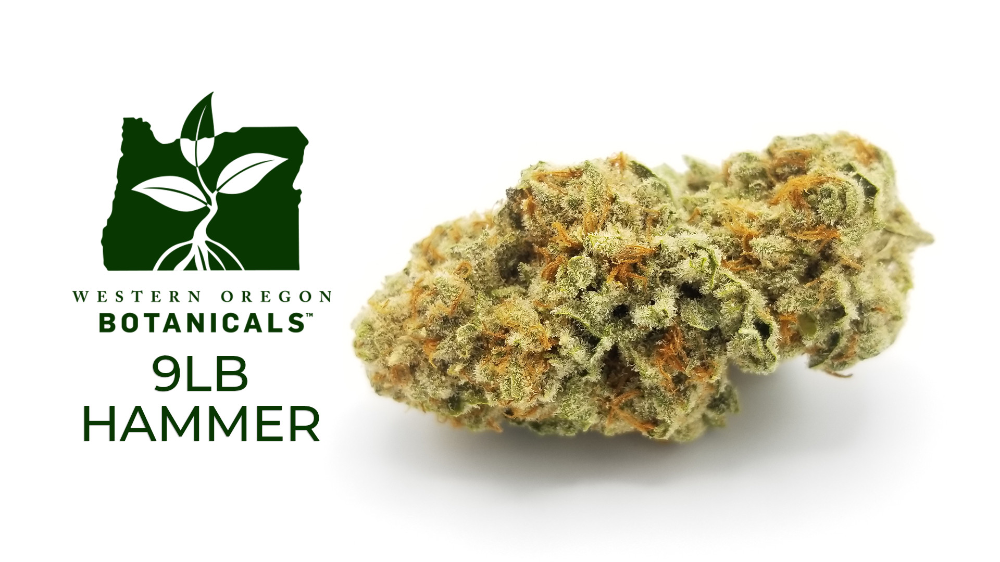
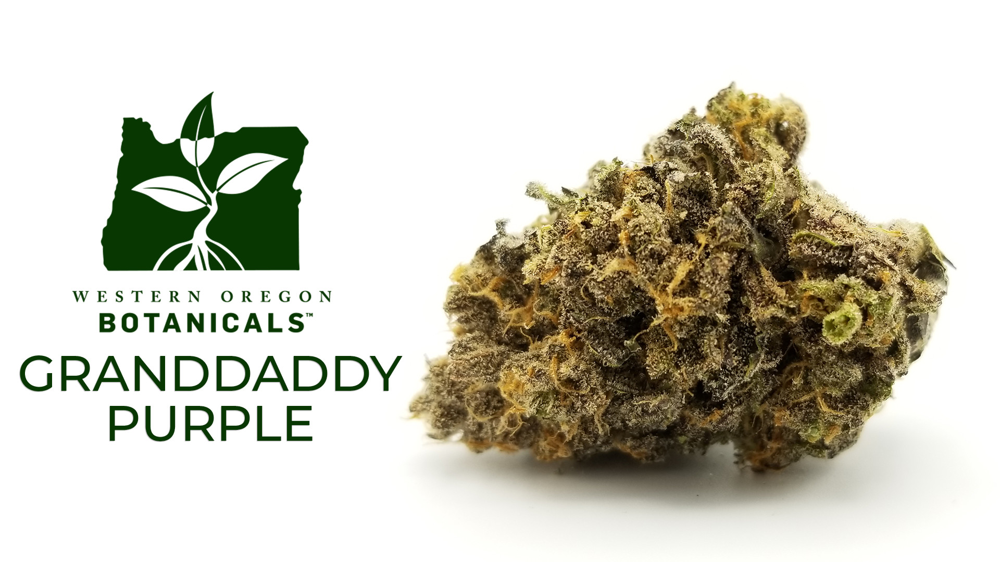
Grand Daddy Purple is a potent indica that will give you cerebral euphoria, while keeping your body completely relaxed. Commonly used to help with insomnia, appetite loss, pain, stress, and even muscle spasms, GDP is not a stain to miss out on.
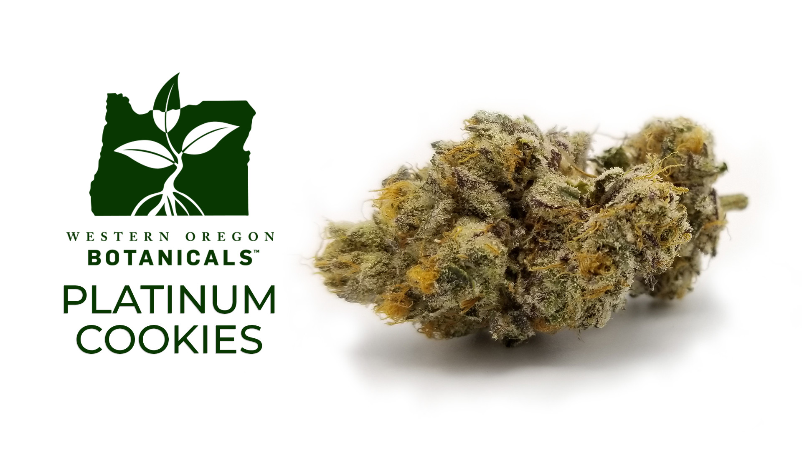
Platinum Cookies smells like candy and tastes just as sweet. This frosty, balanced hybrid leaves you feeling uplifted with ease. Great for easing the anxiety, without the couch locking experience.
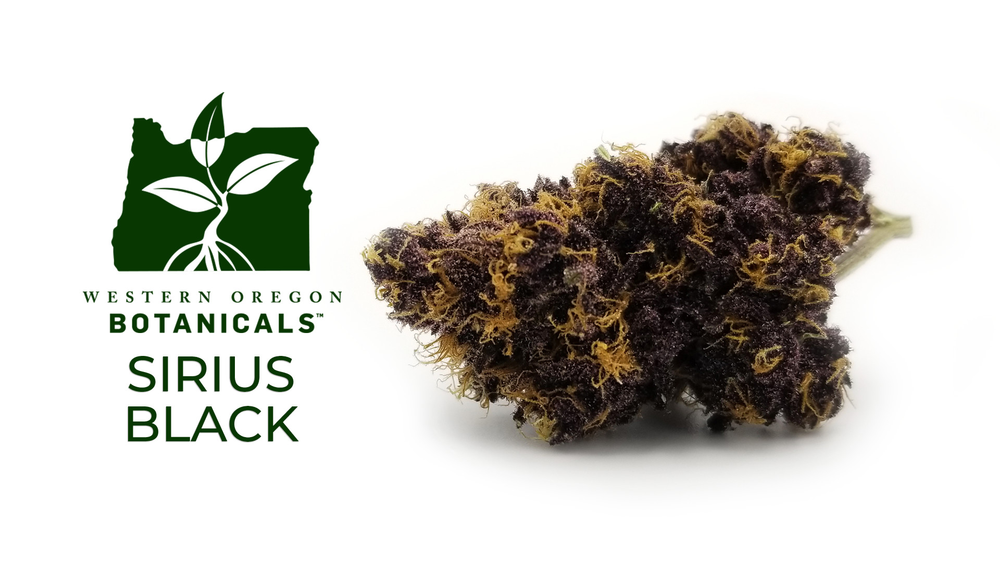
This beautifully deep purple strain is a fan favorite! Sirius Black is an indica dominant strain best for those who want that full body effect without being locked in one place for the duration. Known to help with chronic pain and fatigue.
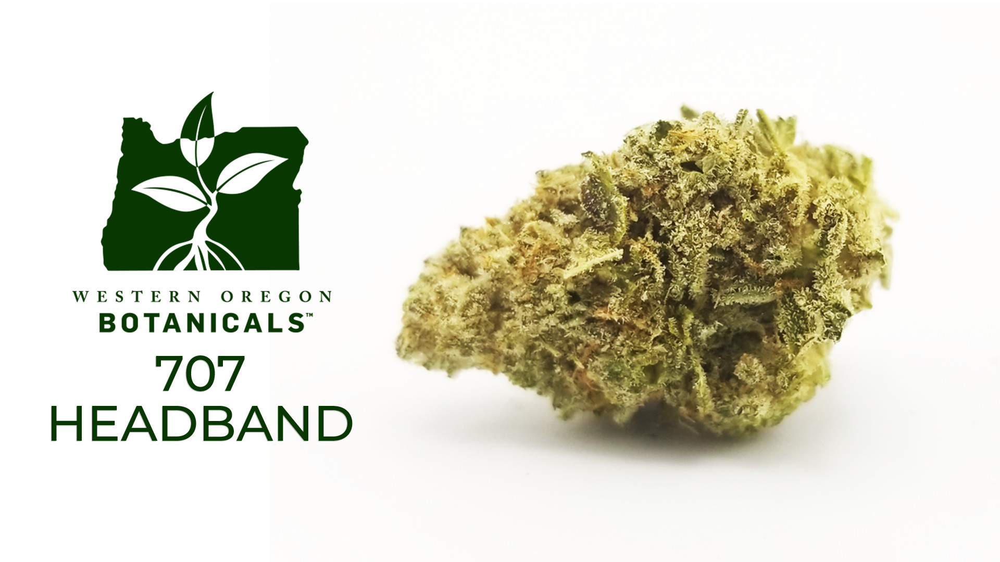
If you are looking for a potently creative strain than look no further than 707 Headband! This pungent strain will give that spark of creativity without leaving you feeling wired. Wonderful for artists needing some inspiration!
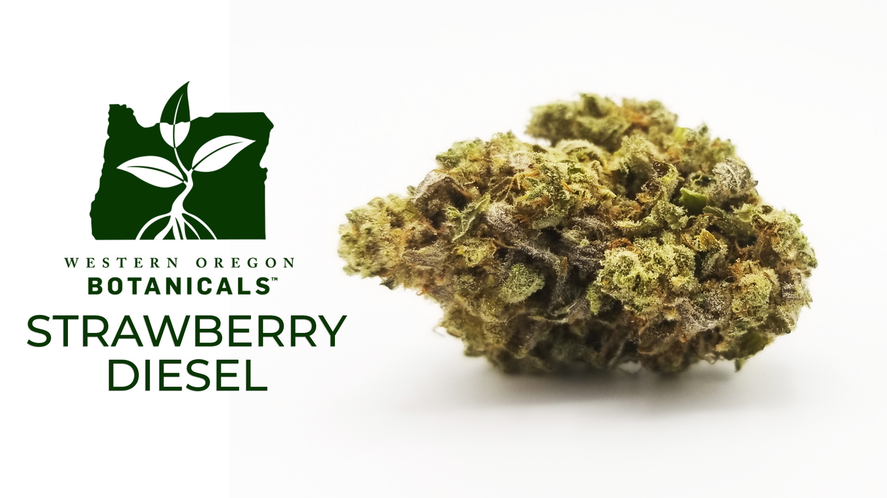
Strawberry Diesel is a perfectly balanced hybrid for both day and night use. Needing to be productive, relax the mind, or maybe a little of both? This sweet and diesel flavored strain is a must to check out.
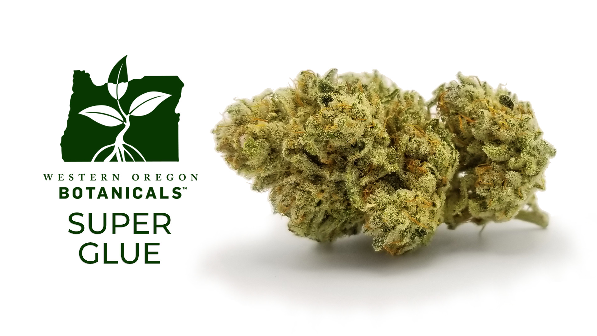
This strain is best recognized for its more medicinal properites with limited cerebal effects. Super Glue tends to carry higher CBD percentages than your average strain. Perfect for people seeking out relief for pain, or stress wihtout giving them much of a couch locking or head high.
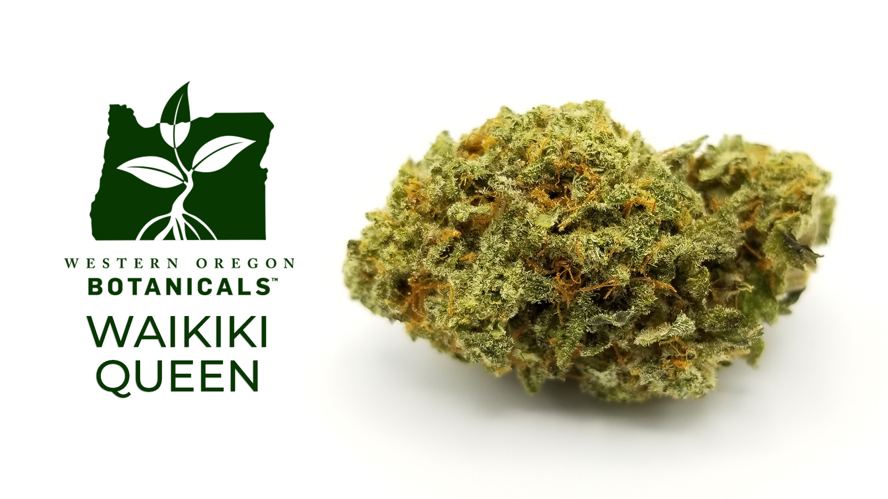
Missing those white sandy beaches? Then Waikiki Queen is the tropical blend to help you with the Oregon rain. This sativa dominant strain will give you the energy boost you have been looking for, while transporting your body to relaxing on a sunny beach.

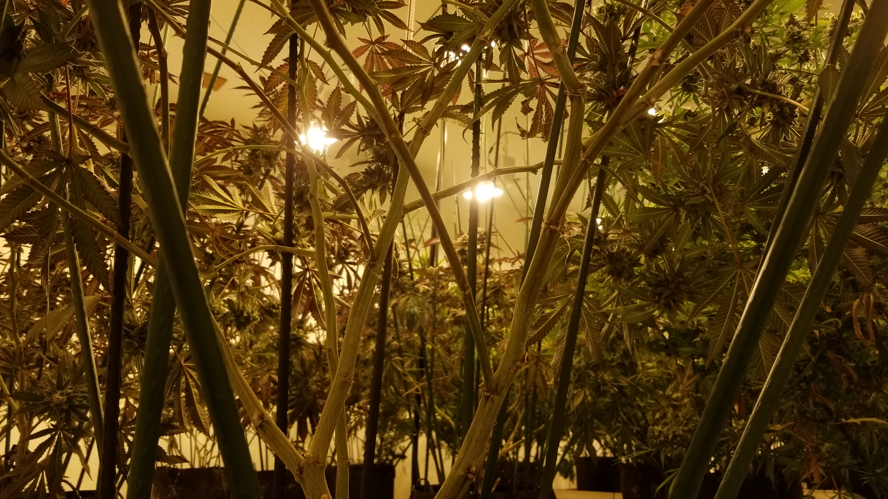
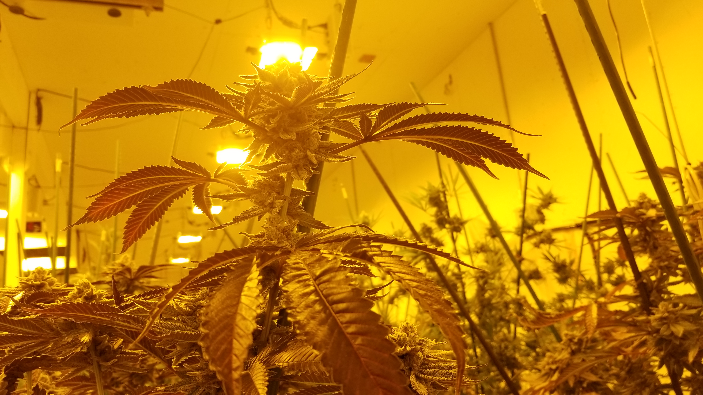

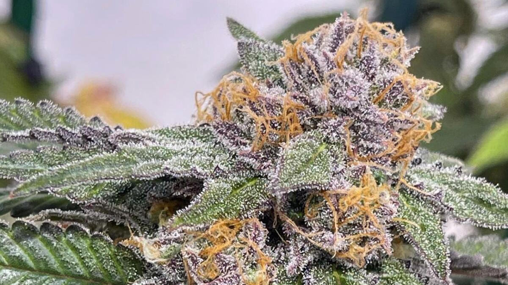
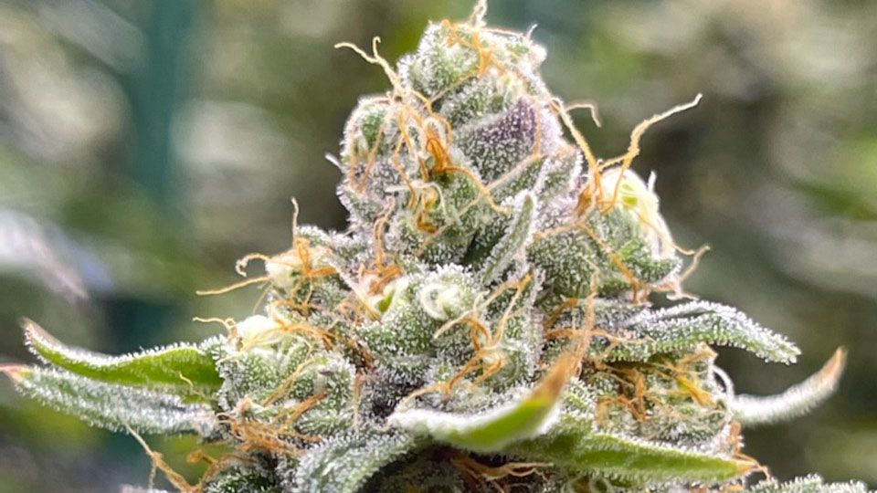
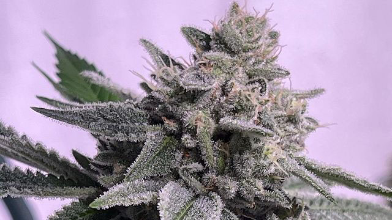